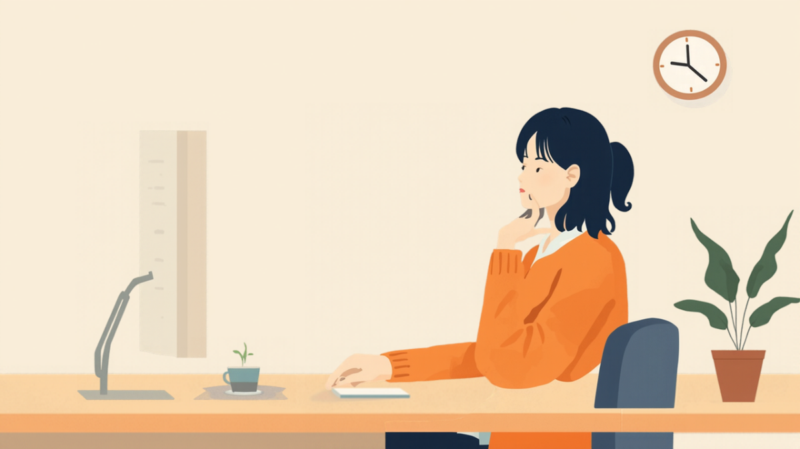
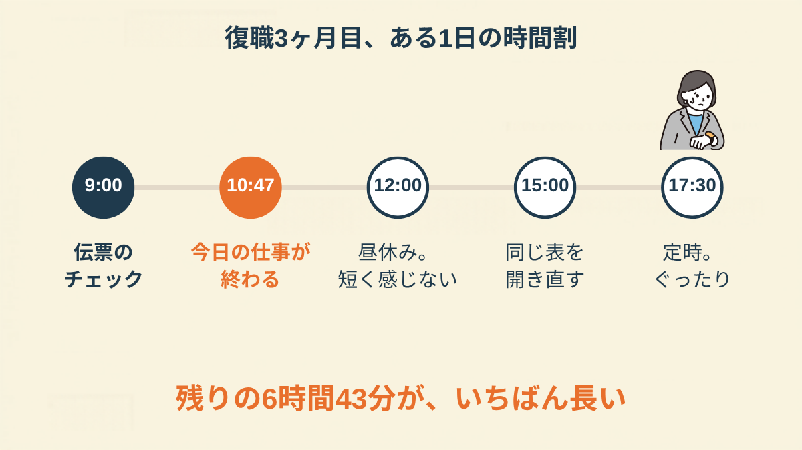
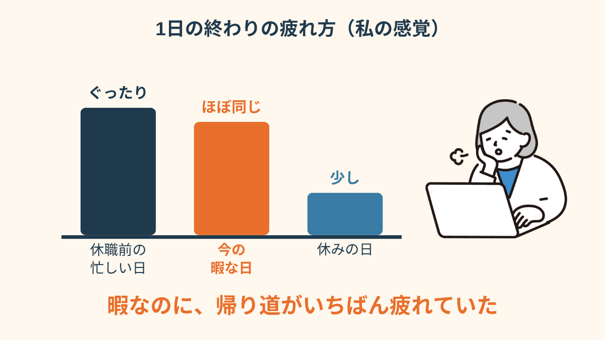
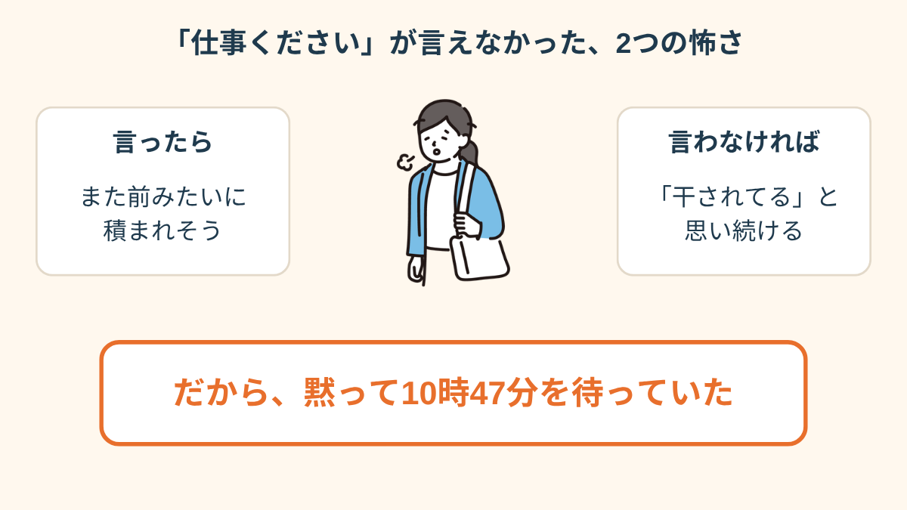
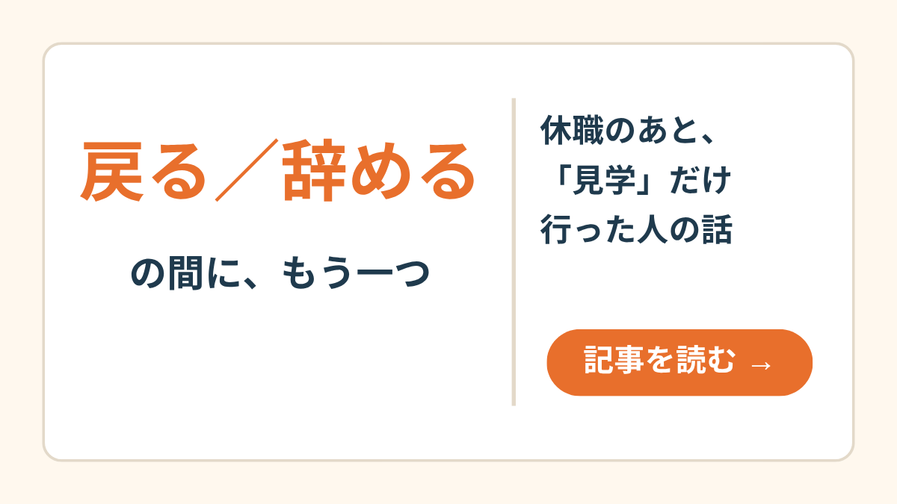
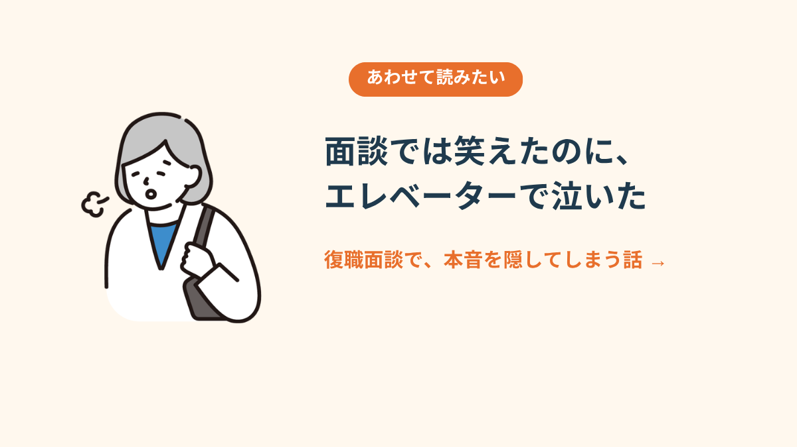
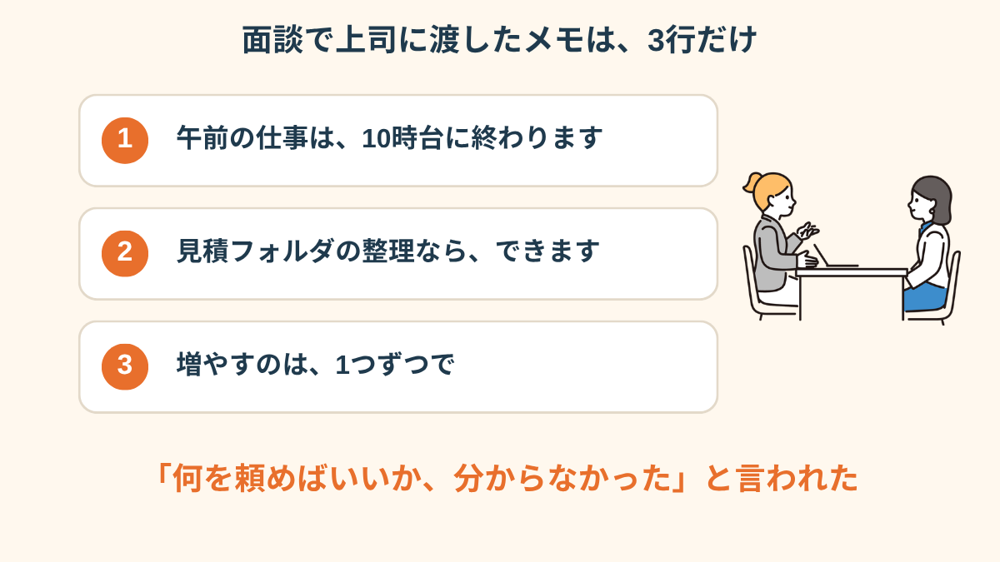
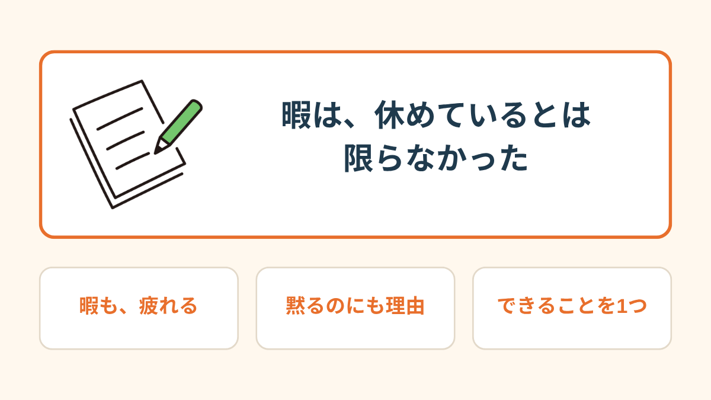

定時は17時半。あと6時間43分ある。パソコンの右下の時計を見て、それから、誰にも見られていないか、なんとなく周りを見た。
10時47分に、今日の仕事が終わる
4ヶ月休んで、8月に元の部署に戻った。営業事務。課長は初日に「しばらくは軽めでいいから。無理しないで」と言ってくれた。本当にありがたかった。最初の2週間は。
私に回ってくるのは、営業さんが入力した伝票のチェックだけになった。前は見積書も、納期の調整も、電話も、全部やっていた。今は伝票が1日30枚くらい。どんなにゆっくり見ても、10時台に終わる。

終わったあとが、問題だった。
同じExcelの表を開いて、閉じて、また開く。セルを一つクリックして、意味もなくスクロールする。トイレに行く。給湯室でお湯を沸かす。席に戻る。まだ13時半。

隣の席の後輩は、電話を肩にはさみながら見積を打っている。前は、あれが私の仕事だった。「何か手伝おうか」の一言が、喉のところで止まる。
「僕のときは、会議にも呼ばれなくなりました。気をつかってくれてるのは分かるんです。分かるんですけど、予定表が真っ白なのを見るたびに、ああ、もう戦力じゃないんだなって。3ヶ月くらい、それで勝手に落ち込んでました」
暇なのに、帰り道がいちばん疲れていた
おかしな話だと思う。仕事はほとんどしていない。なのに、定時に会社を出て駅まで歩くあいだ、足が重くて、何度も立ち止まりそうになった。
休職する前、終電近くまで働いていた頃と、疲れ方があまり変わらない。いや、帰り道だけで言えば、今のほうがつらいかもしれない。

たぶん、ずっと見張っていたんだと思う。自分のことを。「暇そうにしてると思われてないか」「給料泥棒だと思われてないか」「やっぱりあの人まだ無理なんだ、って言われてないか」。
資格の本をこっそり机に置いてみたこともある。誰かが後ろを通るたびに、閉じた。結局、3ページしか進まなかった。
家に帰ると、夫に「今日どうだった？」と聞かれる。「別に、普通」と答える。普通じゃない。でも、「暇でつらい」は、口に出すとぜいたくに聞こえる気がして、言えなかった。
「私は時短で戻ったんですけど、16時に『お先に失礼します』って言うのが毎日しんどくて。誰も何も言わないのに。暇な日ほど言いにくいんですよ、あれ。半年たって、やっと声が小さくならなくなりました」
「仕事ください」が、どうしても言えなかった
言えばいい、というのは分かっていた。課長に「もう少し仕事をください」と一言。それだけのことだ。
でも、怖さが2つあった。

言ったら、「もう大丈夫なんだね」と思われて、見積も電話も一気に戻ってくるかもしれない。前の私は、それで倒れた。
言わなければ、このまま「干されてる」と思い続ける。結局、黙って10時47分を待つ毎日が、2ヶ月続いた。
戻ったあとのきつさが続くとき、職場の外に相談先を一つ持っておく、という話も書きました。

休職のあと、就労移行支援の「見学」だけ行った人の話 →
10月の終わり、月1回の課長との面談があった。復職してから毎回、「体調はどう？」「大丈夫です」で5分で終わっていた面談。

面談で「大丈夫です」しか言えなかった人の話 →その前の晩、メモ帳に書いては消して、残ったのが3行だった。「仕事をください」とは、結局書けなかった。代わりに、今の状態と、できることを1つだけ書いた。

課長はメモを読んで、少し黙ってから言った。「ごめん、正直、何を頼んでいいか分からなかったんだよね。また無理させたらって思うと」
見積フォルダは、5年分ぐちゃぐちゃだった。誰も手をつけたがらない仕事。それが、ちょうどよかった。
整理は2週間で終わった。今も、10時47分に手が止まる日はある。その日は、課長の席まで歩いて「次、何かありますか」と聞くようにしている。聞けない日もある。それでいい、ということにしている。

この記事に、聞いてみたいことはありますか？
「自分の場合はどうなんだろう」と思ったことを、気軽に書いてみてください。いただいた質問は個別にお返事したうえで、匿名で記事にすることがあります。